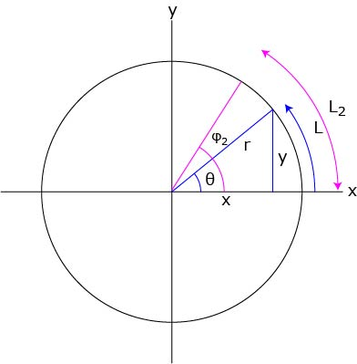
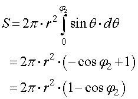
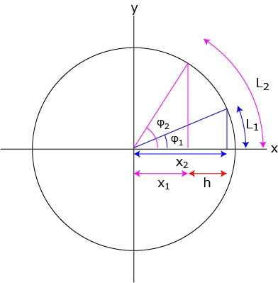
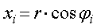
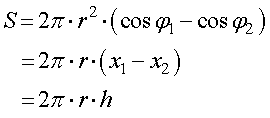

球をある平面で切り取った部分，球冠，の表面積は，以下の図で示すように，

積分範囲を，０からL2までにすればよいので，

と表すことができます．
では，今日を2枚の平面で切り取った部分，球帯，の表面積は．．．．これも積分範囲の指定だけで計算でき，

と書くことができます．ここで，

ですので，

と非常に簡単な式となります． つまり， 大円の円周と厚みを掛けたものが円帯の表面積（底面，上面は含まない） となります．